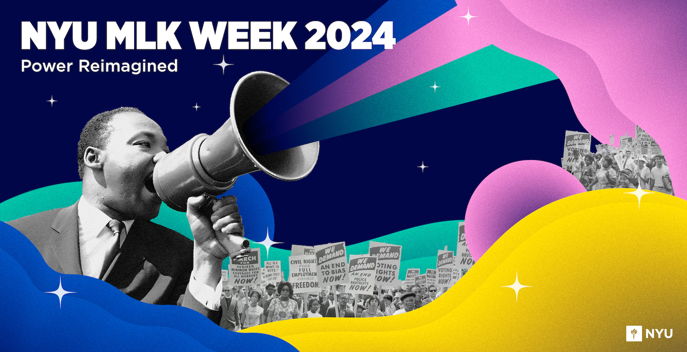
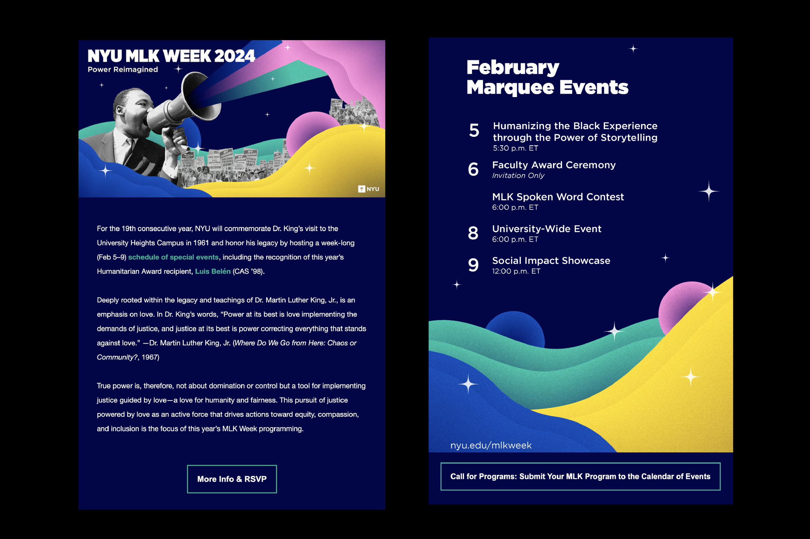
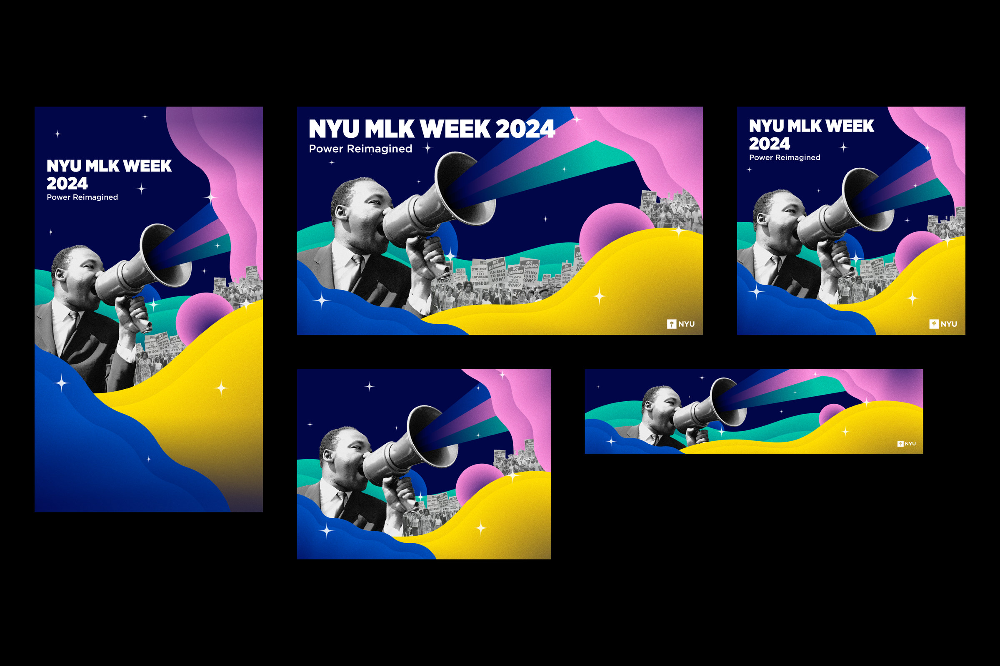
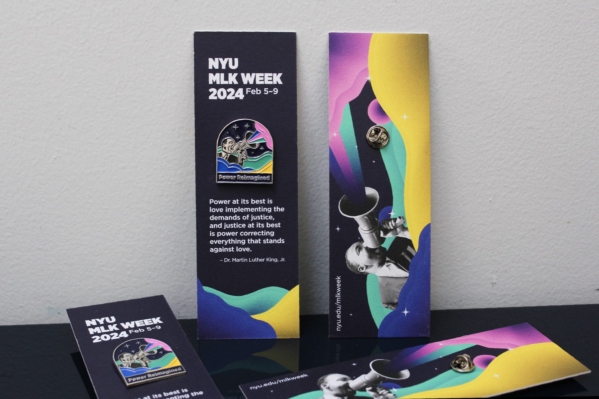
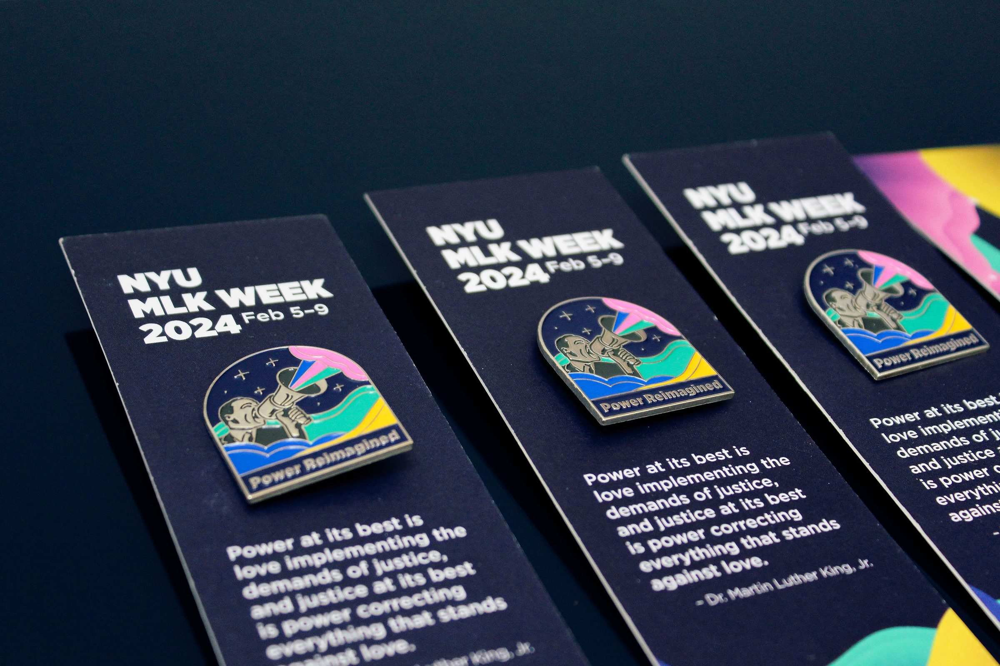
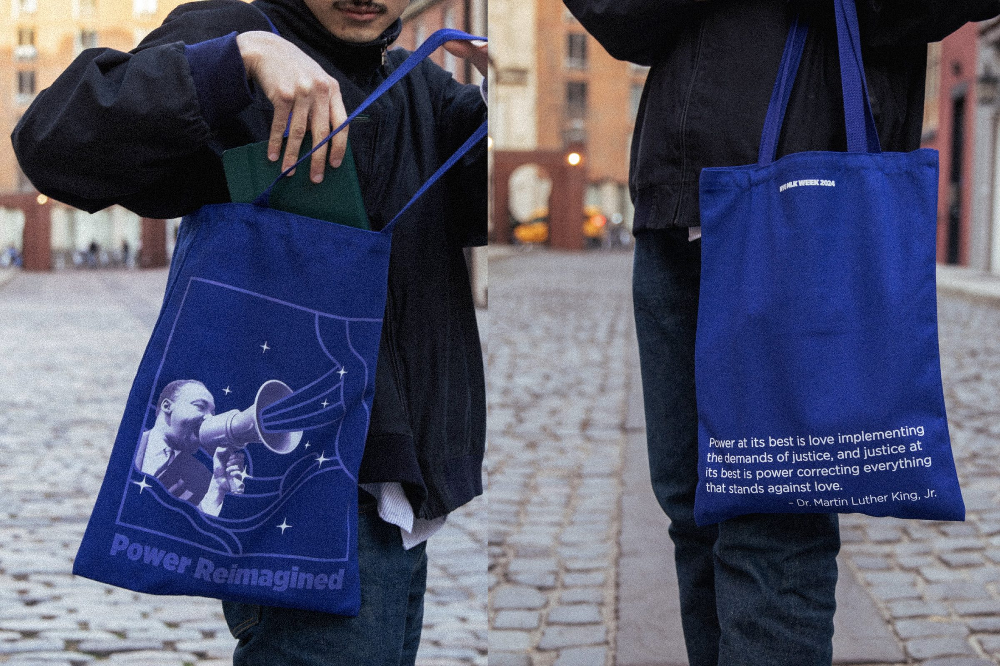
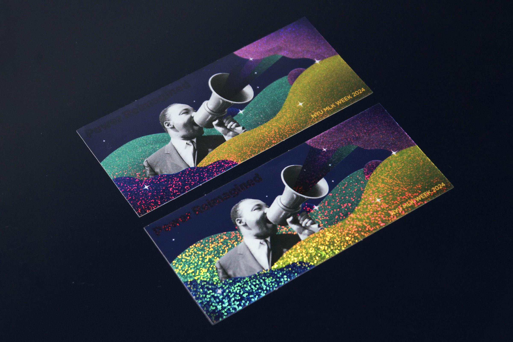
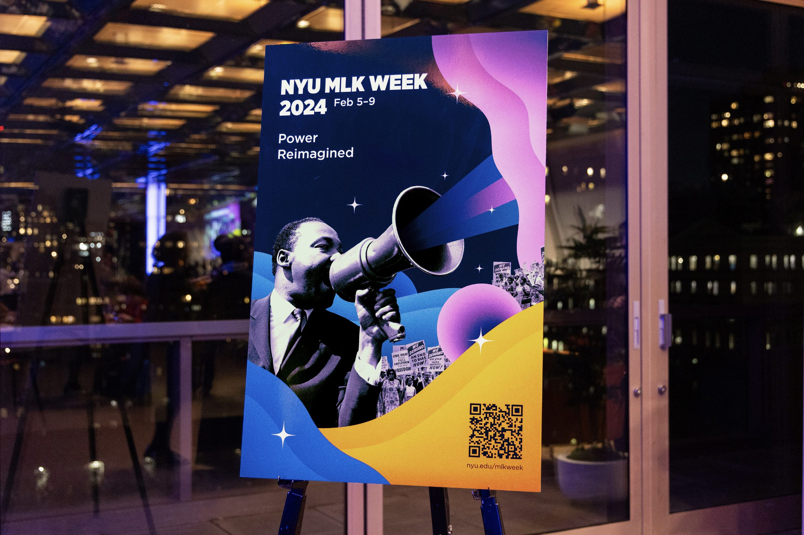

NYU MLK Week
January 2024
Lead Designer
Visual Identity, Print, Merchandise & Social
MLK Week is an annual university-wide celebration at NYU honoring the legacy of Dr. Martin Luther King Jr. Each year, the event features a distinct theme that reflects King's enduring message.
I designed the visual identity for MLK Week 2024, inspired by the week’s central theme, Powered by Love. The visuals aimed to capture the essence of community, unity, and collective action, reinforcing the spirit and values celebrated throughout the events. By blending historical photographs with contemporary design elements, the visuals created a meaningful connection between past and present. The branding was implemented across promotional materials, digital platforms, and branded merchandise, ensuring a cohesive and engaging experience.


Digital and Social
I designed an email campaign to promote NYU MLK Week 2024, highlighting key events and information through clear, engaging visuals. Additionally, I adapted the visual identity across multiple social media platforms, creating tailored graphics optimized for various formats to maintain a cohesive and impactful online presence.

Print and Merchandise
I created a bookmark and enamel pin for MLK Week 2024. The double-sided bookmark features the event's main banner design on one side and the theme-inspiring quote on the other, along with space to hold the pin.
Additionally, I designed a tote bag featuring complementary graphics on each side, reinforcing the event’s visual identity. These elements and themed merchandise, such as stickers and pins, provided both a cohesive brand experience and meaningful keepsakes for attendees.




